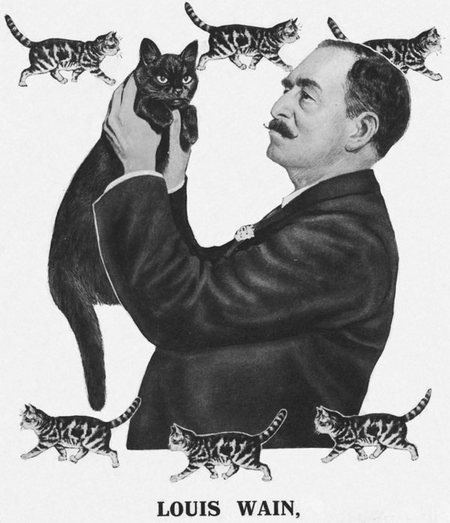
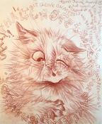
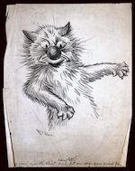
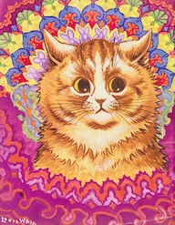
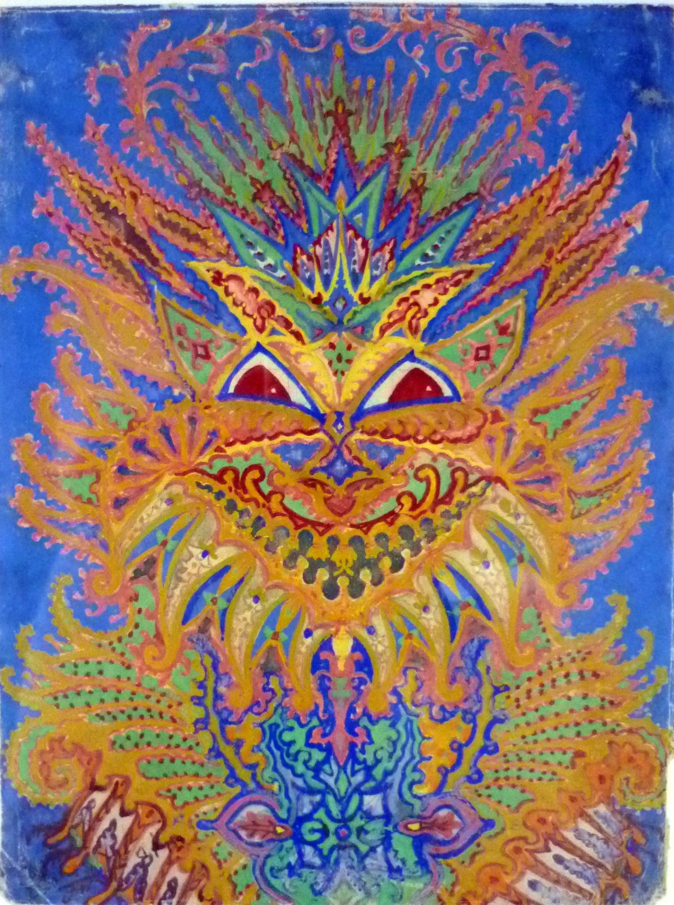

Art and Life of Louis Waine

About
Louis Wain was an amazing artist known for his whimsical and colorful paintings of cats. His unique style captured the playful and mischievous nature of feline friends. His artwork became popular in the late 19th and early 20th centuries, and his love for cats shines through in every brushstroke.
Wain was born with a cleft lip and as a child was not in good health; he did not attend school until he was ten. He was sent first to Orchard Street Foundation School in South Hackney but spent much of his time playing truant and wandering around London, attending lectures at the Royal Polytechnic Institution or going on insect-hunting expeditions into the countryside.
Louis Wain faced some hardships in his life, including struggles with mental health. Despite these challenges, he continued to create beautiful artwork and his unique style evolved over time. His love for cats remained a constant source of inspiration, bringing joy to many people. He spent the remaining fifteen years of his life in mental hospitals, where he continued to draw and paint. Some of his later abstract paintings have been cited as precursors of psychedelic art.Artwork

I am a bit gone on myself

Caught!

Kaleidoscope Cats IV

Kaleidoscope Cats VI